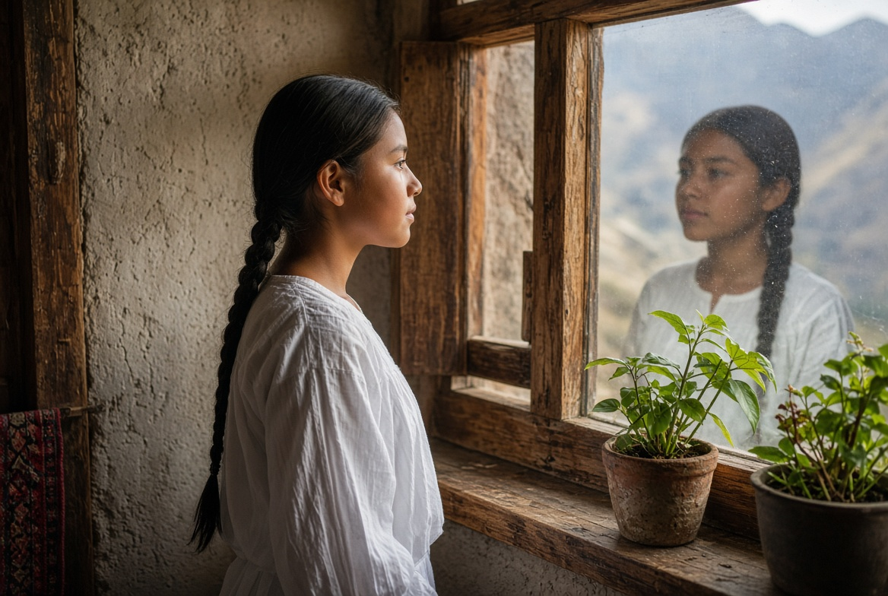
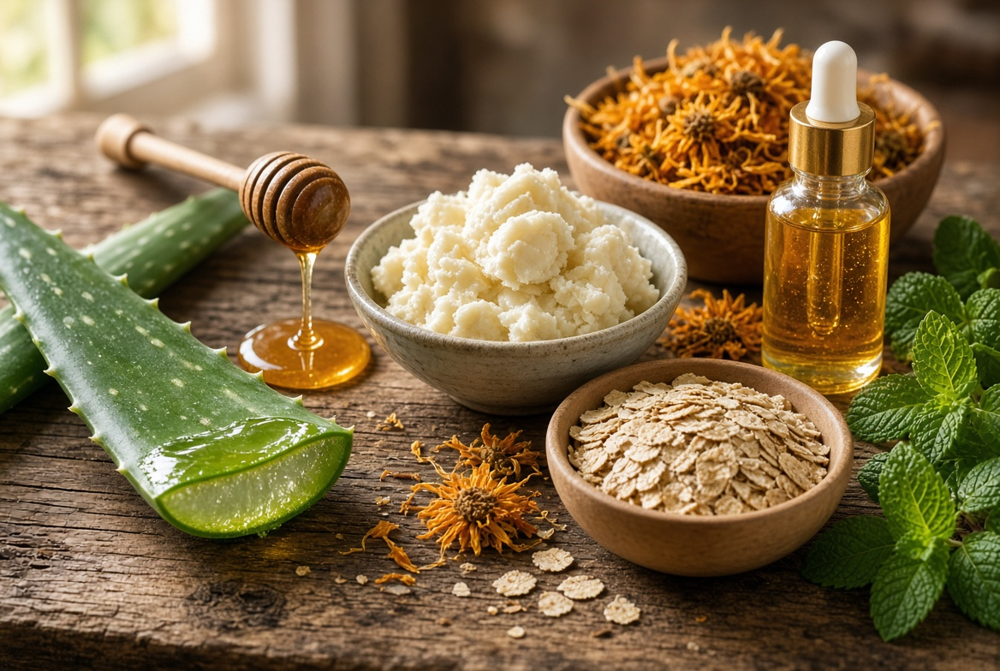
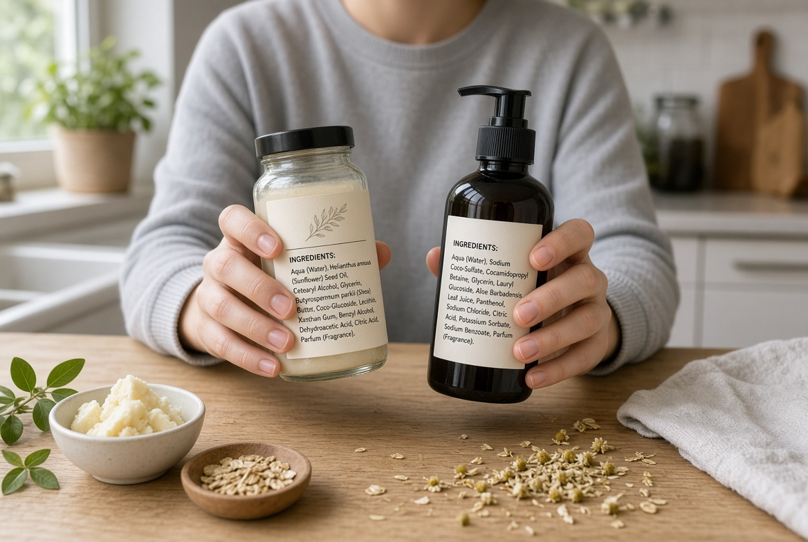
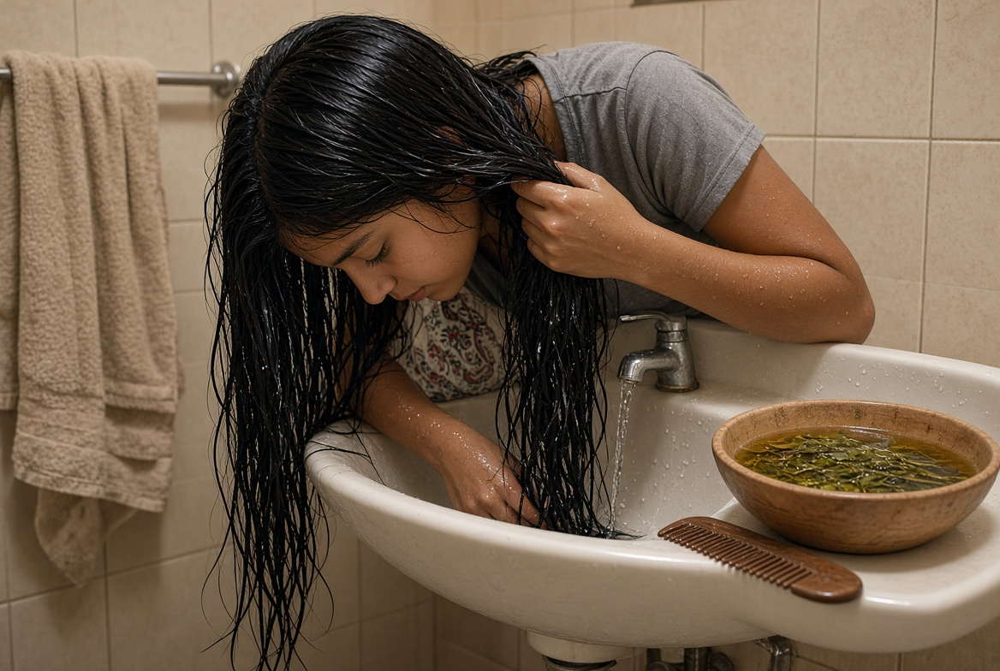
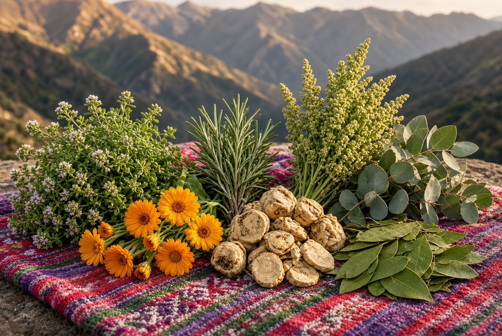
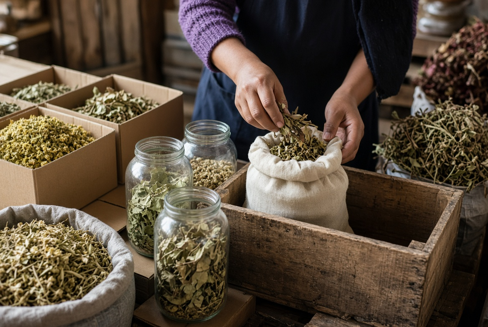
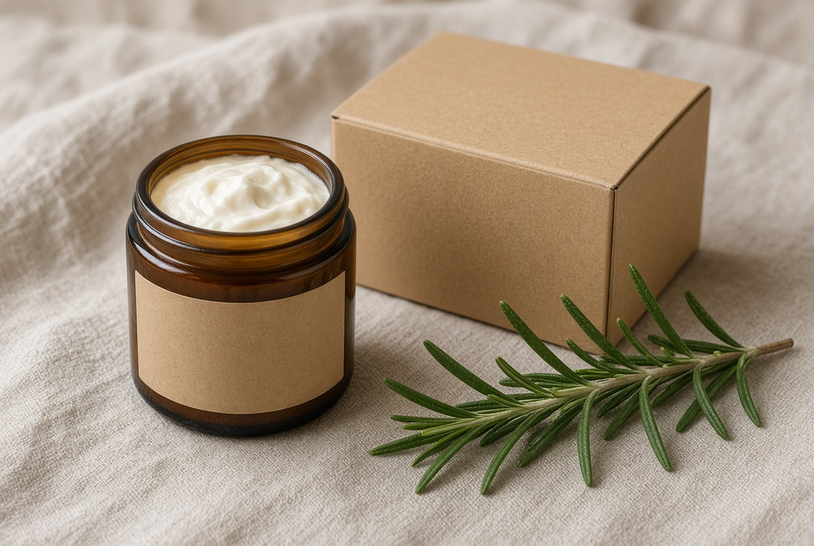
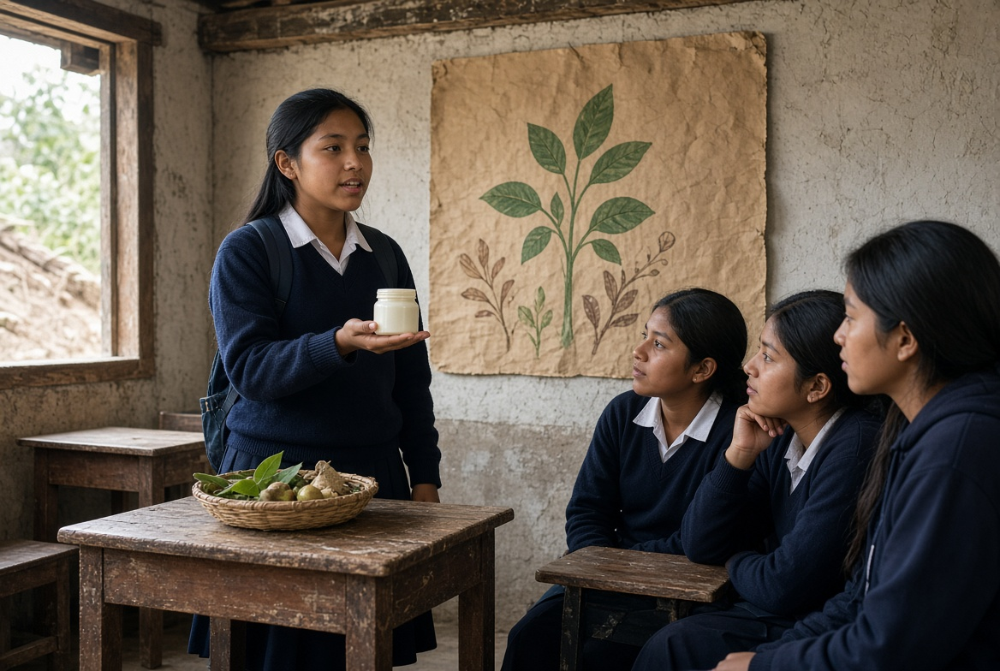

Módulo 1
Autocuidado, bienestar e identidad
Reconocer el cuerpo, la autoestima y hábitos de bienestar. Cuidarse sin copiar estereotipos ni promesas imposibles.
Sílabo · 8 módulos
Marizol Verónica Mamani López
Ocho sesiones para conocer el autocuidado, los ingredientes naturales del Perú y cómo crear un producto honesto, sostenible y bien comunicado.

Reconocer el cuerpo, la autoestima y hábitos de bienestar. Cuidarse sin copiar estereotipos ni promesas imposibles.

Aceites, mantecas, plantas e hidrosoles: para qué sirven, cómo se combinan y qué precauciones hay que tener.

Identificar ingredientes, advertencias y marketing. Distinguir evidencia real de frases vacías en los envases.

Rutinas simples según tipo de piel y cabello. Limpiar y nutrir sin agredir la barrera natural de la piel.

Plantas andinas y amazónicas usadas en el cuidado. Respeto al saber local y a la biodiversidad.

Comprar local, reutilizar frascos y reducir plásticos al elaborar un cosmético natural.

Formular un prototipo natural y diseñar un envase claro, seguro, ecológico y fácil de entender.

Exponer el producto sin exagerar beneficios. Comunicación honesta, respetuosa y clara ante el aula.